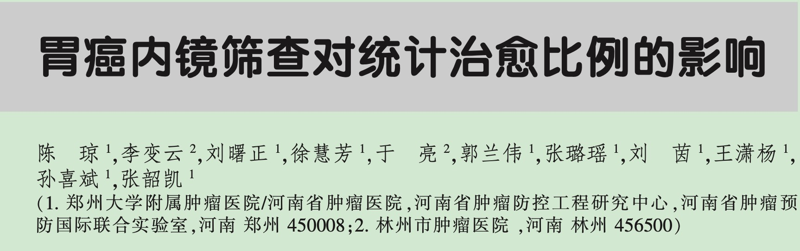

胃癌内镜筛查对统计治愈比例的影响
中文论文
第一作者
治愈比例
中国肿瘤
Abstract
治愈比例即癌症患者人群中多大比例的患者被治愈越来越引起患者，医生以及癌症防控策略制定者的注意。本研究探讨了胃癌内镜筛查对治愈比例的影响。
目的
评估胃癌统计治愈率现状及其与胃癌内镜筛查之间的关系。
方法
提取林州市以人群为基础的肿瘤登记数据库中ICD10为C16.0~C16.9范围的胃癌病例数据，通过链接胃癌人群筛查数据库与肿瘤登记数据库以获取患者是否参加筛查状态，利用混合统计治愈模型建模并估计统计治愈比例及相对生存率，计算OR值以及95%可信区间以评估胃癌内镜筛查和统计治愈之间的关系。
结果
曾参加内镜筛查和从未参加内镜筛查胃癌患者的统计治愈比例分别为75.51% (95%CI: 69.18% ~ 81.85%)和31.69% (95% CI: 30.30% ~ 33.07%)，估计治愈比例两者差值为38.76% (32.35% ~ 45.00%)。参加内镜筛查患者与未参加筛查患者相比，受益于统计治愈的比值比为5.84 (95%CI: 4.10 ~ 8.31)，参加内镜筛查患者收益于贲门胃统计治愈（OR: 6.10，95CI: 3.96 ~ 9.39）要高于非贲门胃(OR: 5.34，95CI: 2.54 ~ 11.23)。
结论
参加胃癌内窥镜筛查可以提高胃癌患者统计治愈比例。
【关键词】 胃癌；内镜筛查；统计治愈；治愈比例